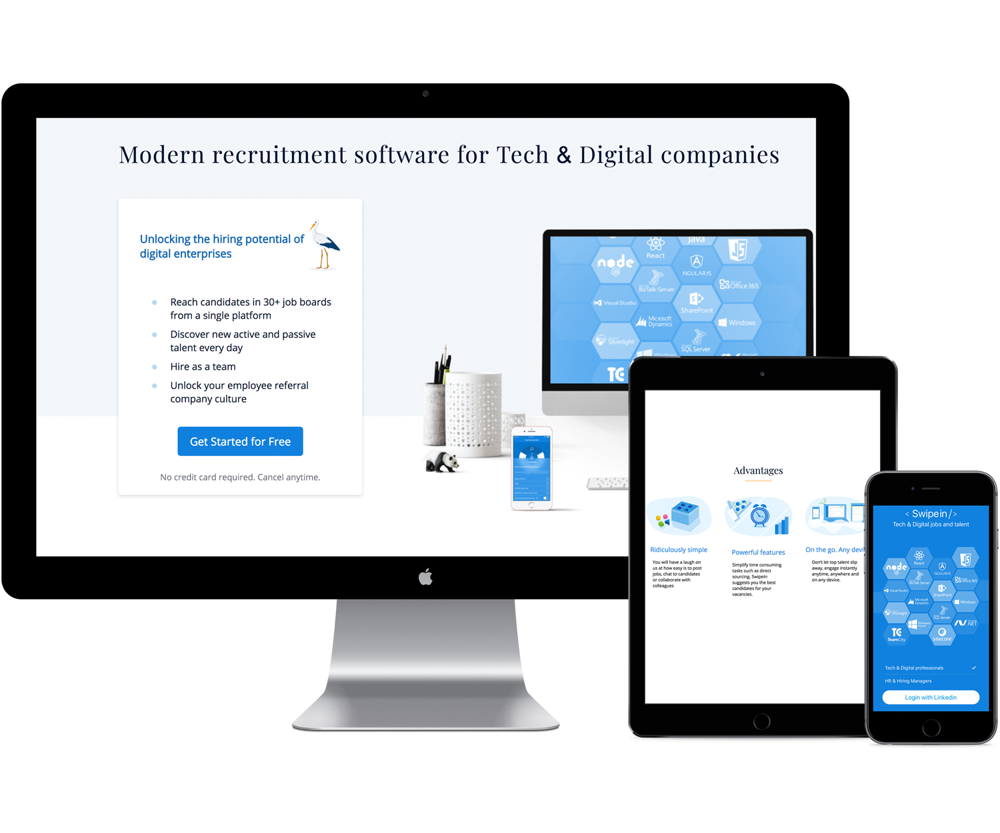

<div class="tab-inner">
  <a class="arrow left" [routerLink]="['/', 'login', {outlets: {'login-slider': ['data-driven-recruitment']}}]" skipLocationChange><mat-icon>keyboard_arrow_left</mat-icon></a>
  <div class="content-wrap">
    <h3 class="header">Cross Platform</h3>
    Wherever you are. Keep always track and access to your candidates, Jobs, Recruitment team and data
  </div>
  <div class="image-wrap">
    
  </div>
  <a class="arrow right invisible"><mat-icon>keyboard_arrow_right</mat-icon></a>
</div>